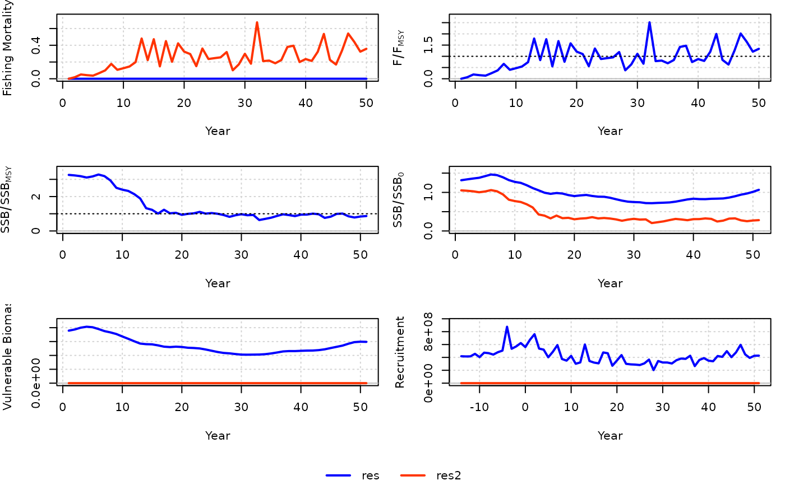

A generic statistical catch-at-age model (single fleet, single season) that uses catch, index, and catch-at-age composition
data. SCA parameterizes R0 and steepness as leading productivity parameters in the assessment model. Recruitment is estimated
as deviations from the resulting stock-recruit relationship. In SCA2, the mean recruitment in the time series is estimated and
recruitment deviations around this mean are estimated as penalized parameters (SR = "none", similar to Cadigan 2016). The standard deviation is set high
so that the recruitment is almost like free parameters. Unfished and MSY reference points are not estimated, it is recommended to use yield per recruit
or spawning potential ratio in harvest control rules. SCA_Pope is a variant of SCA that fixes the expected catch to the observed
catch, and Pope's approximation is used to calculate the annual exploitation rate (U; i.e., catch_eq = "Pope").
SCA(
x = 1,
Data,
AddInd = "B",
SR = c("BH", "Ricker", "none"),
vulnerability = c("logistic", "dome"),
catch_eq = c("Baranov", "Pope"),
CAA_dist = c("multinomial", "lognormal"),
CAA_multiplier = 50,
rescale = "mean1",
max_age = Data@MaxAge,
start = NULL,
prior = list(),
fix_h = TRUE,
fix_F_equilibrium = TRUE,
fix_omega = TRUE,
fix_tau = TRUE,
LWT = list(),
early_dev = c("comp_onegen", "comp", "all"),
late_dev = "comp50",
integrate = FALSE,
silent = TRUE,
opt_hess = FALSE,
n_restart = ifelse(opt_hess, 0, 1),
control = list(iter.max = 2e+05, eval.max = 4e+05),
inner.control = list(),
...
)
SCA2(
x = 1,
Data,
AddInd = "B",
vulnerability = c("logistic", "dome"),
CAA_dist = c("multinomial", "lognormal"),
CAA_multiplier = 50,
rescale = "mean1",
max_age = Data@MaxAge,
start = NULL,
prior = list(),
fix_h = TRUE,
fix_F_equilibrium = TRUE,
fix_omega = TRUE,
fix_tau = TRUE,
LWT = list(),
common_dev = "comp50",
integrate = FALSE,
silent = TRUE,
opt_hess = FALSE,
n_restart = ifelse(opt_hess, 0, 1),
control = list(iter.max = 2e+05, eval.max = 4e+05),
inner.control = list(),
...
)
SCA_Pope(
x = 1,
Data,
AddInd = "B",
SR = c("BH", "Ricker", "none"),
vulnerability = c("logistic", "dome"),
CAA_dist = c("multinomial", "lognormal"),
CAA_multiplier = 50,
rescale = "mean1",
max_age = Data@MaxAge,
start = NULL,
prior = list(),
fix_h = TRUE,
fix_U_equilibrium = TRUE,
fix_tau = TRUE,
LWT = list(),
early_dev = c("comp_onegen", "comp", "all"),
late_dev = "comp50",
integrate = FALSE,
silent = TRUE,
opt_hess = FALSE,
n_restart = ifelse(opt_hess, 0, 1),
control = list(iter.max = 2e+05, eval.max = 4e+05),
inner.control = list(),
...
)A position in the Data object (by default, equal to one for assessments).
An object of class Data
A vector of integers or character strings indicating the indices to be used in the model. Integers assign the index to the corresponding index in Data@AddInd, "B" (or 0) represents total biomass in Data@Ind, "VB" represents vulnerable biomass in Data@VInd, and "SSB" represents spawning stock biomass in Data@SpInd. Vulnerability to the survey is fixed in the model.
Stock-recruit function (either "BH" for Beverton-Holt, "Ricker", or "none" for constant mean recruitment).
Whether estimated vulnerability is "logistic" or "dome" (double-normal).
See details for parameterization.
Whether to use the Baranov equation or Pope's approximation to calculate the predicted catch at age in the model.
Whether a multinomial or lognormal distribution is used for likelihood of the catch-at-age matrix. See details.
Numeric for data weighting of catch-at-age matrix if CAA_hist = "multinomial". Otherwise ignored. See details.
A multiplicative factor that rescales the catch in the assessment model, which
can improve convergence. By default, "mean1" scales the catch so that time series mean is 1, otherwise a numeric.
Output is re-converted back to original units.
Integer, the maximum age (plus-group) in the model.
Optional list of starting values. Entries can be expressions that are evaluated in the function. See details.
A named list for the parameters of any priors to be added to the model. See below.
Logical, whether to fix steepness to value in Data@steep in the model for SCA. This only affects
calculation of reference points for SCA2.
Logical, whether the equilibrium fishing mortality prior to the first year of the model
is estimated. If TRUE, F_equilibrium is fixed to value provided in start (if provided),
otherwise, equal to zero (assumes unfished conditions).
Logical, whether the standard deviation of the catch is fixed. If TRUE,
omega is fixed to value provided in start (if provided), otherwise, value based on Data@CV_Cat.
Logical, the standard deviation of the recruitment deviations is fixed. If TRUE,
tau is fixed to value provided in start (if provided), otherwise, value based on Data@sigmaR.
A named list (Index, CAA, Catch) of likelihood weights for the data components. For the index, a vector of length survey. For CAL and Catch, a single value.
Numeric or character string describing the years for which recruitment deviations are estimated in SCA. By default,
equal to "comp_onegen", where rec devs are estimated one full generation prior to the first year when catch-at-age (CAA) data are available.
With "comp", rec devs are estimated starting in the first year with CAA. With "all", rec devs start at the beginning of the model.
If numeric, the number of years after the first year of the model for which to start estimating rec devs. Use negative numbers for years prior to the first year.
Typically, a numeric for the number of most recent years in which recruitment deviations will
not be estimated in SCA (recruitment in these years will be based on the mean predicted by stock-recruit relationship).
By default, "comp50" uses the number of ages (smaller than the mode)
for which the catch-at-age matrix has less than half the abundance than that at the mode.
Logical, whether the likelihood of the model integrates over the likelihood of the recruitment deviations (thus, treating it as a random effects/state-space variable). Otherwise, recruitment deviations are penalized parameters.
Logical, passed to MakeADFun, whether TMB
will print trace information during optimization. Used for diagnostics for model convergence.
Logical, whether the hessian function will be passed to nlminb during optimization
(this generally reduces the number of iterations to convergence, but is memory and time intensive and does not guarantee an increase
in convergence rate). Ignored if integrate = TRUE.
The number of restarts (calls to nlminb) in the optimization procedure, so long as the model
hasn't converged. The optimization continues from the parameters from the previous (re)start.
A named list of arguments for optimization to be passed to
nlminb.
A named list of arguments for optimization of the random effects, which
is passed on to newton.
Other arguments to be passed.
Typically, a numeric for the number of most recent years in which a common recruitment deviation will
be estimated (in SCA2, uninformative years will have a recruitment closer to the mean, which can be very misleading,
especially near the end of the time series). By default, "comp50" uses the number of ages (smaller than the mode)
for which the catch-at-age matrix has less than half the abundance than that at the mode.
Logical, same as `fix_F_equilibrium` for `SCA_Pope`.
An object of class Assessment.
The basic data inputs are catch (by weight), index (by weight/biomass), and catch-at-age matrix (by numbers).
With catch_eq = "Baranov" (default in SCA and SCA2), annual F's are estimated parameters assuming continuous fishing over the year, while
an annual exploitation rate from pulse fishing in the middle of the year is estimated in SCA_Pope or SCA(catch_eq = "Pope").
The annual sample sizes of the catch-at-age matrix is provided to the model (used in the likelihood for catch-at-age assuming
a multinomial distribution) and is manipulated via argument CAA_multiplier. This argument is
interpreted in two different ways depending on the value provided. If CAA_multiplier > 1, then this value will cap the annual sample sizes
to that number. If CAA_multiplier <= 1, then all the annual samples sizes will be re-scaled by that number, e.g. CAA_multiplier = 0.1
multiplies the sample size to 10% of the original number. By default, sample sizes are capped at 50.
Alternatively, a lognormal distribution with inverse proportion variance can be used for the catch at age (Punt and Kennedy, 1994, as cited by Maunder 2011).
For start (optional), a named list of starting values of estimates can be provided for:
R0 Unfished recruitment, except when SR = "none" where it is mean recruitment.
By default, 150% Data@OM$R0[x] is used as the start value in closed-loop simulation, and 400% of mean catch otherwise.
h Steepness. Otherwise, Data@steep[x] is used, or 0.9 if empty.
M Natural mortality. Otherwise, Data@Mort[x] is used.
vul_par Vulnerability parameters, see next paragraph.
F A vector of length nyears for year-specific fishing mortality.
F_equilibrium Equilibrium fishing mortality leading into first year of the model (to determine initial depletion). By default, 0.
U_equilibrium Same as F_equilibrium when catch_eq = "Pope". By default, 0.
omega Lognormal SD of the catch (observation error) when catch_eq = "Baranov". By default, Data@CV_Cat[x].
tau Lognormal SD of the recruitment deviations (process error). By default, Data@sigmaR[x].
Vulnerability can be specified to be either logistic or dome. If logistic, then the parameter
vector vul_par is of length 2:
vul_par[1] corresponds to a_95, the age of 95% vulnerability. a_95 is a transformed parameter via logit transformation to constrain a_95 to less than 75%
of the maximum age: a_95 = 0.75 * max_age * plogis(x[1]), where x is the estimated vector.
vul_par[2] corresponds to a_50, the age of 50% vulnerability. Estimated as an offset, i.e., a_50 = a_95 - exp(x[2]).
With dome vulnerability, a double Gaussian parameterization is used, where vul_par
is an estimated vector of length 4:
vul_par[1] corresponds to a_asc, the first age of full vulnerability for the ascending limb. In the model, a_asc is estimated via logit transformation
to constrain a_95 to less than 75% of the maximum age: a_asc = 0.75 * maxage * plogis(x[1]), where x is the estimated vector.
vul_par[2] corresponds to a_50, the age of 50% vulnerability for the ascending limb. Estimated as an offset, i.e.,
a_50 = a_asc - exp(x[2]).
vul_par[3] corresponds to a_des, the last age of full vulnerability (where the descending limb starts). Generated via logit transformation
to constrain between a_asc and max_age, i.e., a_des = (max_age - a_asc) * plogis(x[3]) + a_asc. By default, fixed to a small value so that the dome is effectively
a three-parameter function.
vul_par[4] corresponds to vul_max, the vulnerability at the maximum age. Estimated in logit space: vul_max = plogis(x[4]).
Vague priors of vul_par[1] ~ N(0, sd = 3), vul_par[2] ~ N(0, 3), vul_par[3] ~ Beta(1.01, 1.01) are used to aid convergence when parameters may not be well estimated,
for example, when vulnerability >> 0.5 for the youngest age class.
The following priors can be added as a named list, e.g., prior = list(M = c(0.25, 0.15), h = c(0.7, 0.1).
For each parameter below, provide a vector of values as described:
R0 - A vector of length 3. The first value indicates the distribution of the prior: 1 for lognormal, 2 for uniform
on log(R0), 3 for uniform on R0. If lognormal, the second and third values are the prior mean (in normal space) and SD (in log space).
Otherwise, the second and third values are the lower and upper bounds of the uniform distribution (values in normal space).
h - A vector of length 2 for the prior mean and SD, both in normal space. Beverton-Holt steepness uses a beta distribution,
while Ricker steepness uses a normal distribution.
M - A vector of length 2 for the prior mean (in normal space) and SD (in log space). Lognormal prior.
q - A matrix for nsurvey rows and 2 columns. The first column is the prior mean (in normal space) and the second column
for the SD (in log space). Use NA in rows corresponding to indices without priors.
See online documentation for more details.
Model description and equations are available on the openMSE website.
SCA, SCA_Pope, and SCA_Pope: Cat, Ind, Mort, L50, L95, CAA, vbK, vbLinf, vbt0, wla, wlb, MaxAge
SCA: Rec, steep, sigmaR, CV_Ind, CV_Cat
SC2: Rec, steep, CV_Ind, CV_Cat
SCA_Pope: Rec, steep, sigmaR, CV_Ind
Cadigan, N.G. 2016. A state-space stock assessment model for northern cod, including under-reported catches and variable natural mortality rates. Canadian Journal of Fisheries and Aquatic Science 72:296-308.
Maunder, M.N. 2011. Review and evaluation of likelihood functions for composition data in stock-assessment models: Estimating the effective sample size. Fisheries Research 209:311-319.
Punt, A.E. and Kennedy, R.B. 1997. Population modelling of Tasmanian rock lobster, Jasus edwardsii, resources. Marine and Freshwater Research 48:967-980.
res <- SCA(Data = MSEtool::SimulatedData)
res2 <- SCA2(Data = MSEtool::SimulatedData)
# Downweight the index
res3 <- SCA(Data = MSEtool::SimulatedData, LWT = list(Index = 0.1, CAA = 1))
compare_models(res, res2)
